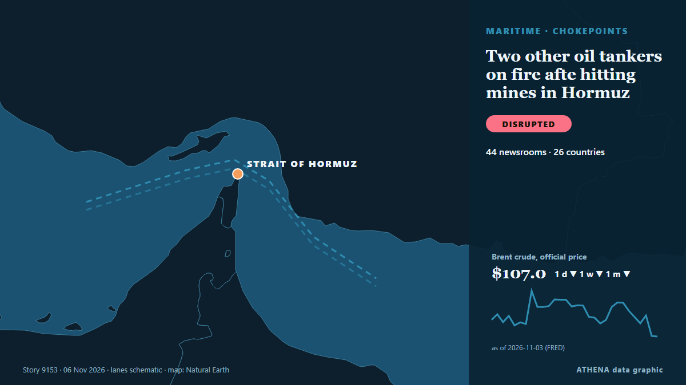

ATHENA Glaux Intelligence — Global news intelligence — every number explained
World news, checked across countries
ATHENA Glaux follows hundreds of news outlets around the world and groups their reports into events. For every event you see how many outlets in how many countries reported it, who was first, and a risk score with its reasons — updated every 30 minutes, in seven languages.
Live from the newsTwo other oil tankers on fire afte hitting mines in Hormuz44 outlets · 26 countries · Risk 3.0 · Sources: Gulf News, Mehr News (English)

Trade & IndustryTwo other oil tankers on fire afte hitting mines in Hormuz
Tehran, IRNA – The Islamic Revolution Guards Corps (IRGC) Navy says a supertanker carrying more than two million barrels of crude oil caught fire after striking a naval mine while attempting to cross… from IRNA (English)
US election shows growing frustration with Israel on both sides of the aisle
LONDON: It is a measure of how much is at stake in Tuesday’s legislative election in Israel, and how finely balanced the outcome might be, that a record 22,000 police officers have been deployed in… from Arab News
Pope has voted in the midterms says Vatican
(ANSA) - ROME, 30 OTT - Pope Leo XIV has voted in the US midterm elections, the Vatican said Friday. from ANSA English

Today in numbers
| 12:00 | 556 |
|---|---|
| 13:00 | 1138 |
| 14:00 | 885 |
| 15:00 | 580 |
| 16:00 | 589 |
| 17:00 | 692 |
| 18:00 | 516 |
| 19:00 | 456 |
| 20:00 | 854 |
| 21:00 | 321 |
| 22:00 | 590 |
| 23:00 | 273 |
| 00:00 | 298 |
| 01:00 | 362 |
| 02:00 | 437 |
| 03:00 | 304 |
| 04:00 | 345 |
| 05:00 | 495 |
| 06:00 | 363 |
| 07:00 | 347 |
| 08:00 | 501 |
| 09:00 | 494 |
| 10:00 | 312 |
| 11:00 | 348 |
Risk of today's events
Paraguay’s Pena impeached over banking crisis
Santiago Pena had offered his resignation, but lawmakers pressed ahead with impeachment proceedings to strip him of the immunity granted to former presidents. from Free Malaysia Today
Melania Trump meets with Russian and Ukrainian representatives at the White House
WASHINGTON: First Lady Melania Trump will host “representatives” of Russia and Ukraine in Washington, the White House said Tuesday, without specifying a date or offering further details about who may… from Business Recorder
Brazil's Lula mocks Flavio Bolsonaro over Trump's US midterm election defeat
Our experts unpack what Lula’s victory means for Brazil’s ties with Washington and how it could reshape a region trending right. from Atlantic Council
Most widely covered
- Geopolitics
US election shows growing frustration with Israel on both sides of the aisle
54 countries · 149 outlets - Economy & Markets
Binance $6.3 Billion Heist to Prompt Closer Scrutiny by Insurers
53 countries · 126 outlets - Geopolitics
Brazil's Lula mocks Flavio Bolsonaro over Trump's US midterm election defeat
46 countries · 95 outlets - Trade & Industry
Bomb threats disrupt European airports: 25 flights diverted in a single day
45 countries · 92 outlets - Geopolitics
After JD Vance, now Trump Jr blames Iran war for US midterms defeat
39 countries · 83 outlets
Emerging signals
- Sudden surge · Active nowStephen Miller
- Sudden surge · Active nowSusie Wiles
- Sudden surge · Active nowPaul Mackenzie
- New name in the news · Active nowPedro Alliana
- Sudden surge · Active nowTAMPA
Official warnings
- Red notification for tropical cyclone FOUR-26. Population affected by Category 1 (120 km/h) wind speeds or higher is 1.156 million .Red · GDACS ·
- M 6.1 - Fiji regionM6.1 · USGS ·
- Cyber chief: UK facing AI-powered attacks on critical infrastructure within two yearsadvisory · UK National Cyber Security Centre ·
- M 6.0 - 165 km NW of Port-Olry, VanuatuM6.0 · USGS ·
Get ATHENA on Telegram
Join the free ATHENA Glaux group and receive the news the moment it is published here:
- breaking events with a risk of 6 or more
- an hourly round-up of the top events
- risk-tracker updates (Hormuz, Red Sea, Taiwan, sanctions and more)
- the daily briefing every morning at 10:00 (Athens time)
- a weekly outlook
- official warnings, emerging signals and rising risks
Tap the button, Telegram opens, press Join. Posts are in English; you can mute or leave at any time. No Telegram yet? It is free at telegram.org.
Risk trackers
More ›Global risk outlook — week 45, 2026 (2–8 Nov) ›
Geopolitics, Politics & Security
More ›Russia says it hit targets in and around Kyiv in massive overnight strike
Nov 7 - Russia said its forces carried out a massive overnight strike on what it described as targets in Ukraine's military-industrial sector and energy and transport infrastructure in Kyiv and the… from The Straits Times
- Diplomacy & summits
Iran's Araghchi holds talks with 12 foreign ministers to defuse tensions
- Elections & politics
Houston mayor limits ICE cooperation with police after Democratic victory
- Elections & politics
Rights on the Ballot Alongside US Congressional Elections
- Wars & conflicts
Iran says forces 'stronger' than at beginning of war
Economics, Finance & Markets
More ›Vietnam Morning Monitor: Amazon aims to take 30 local brands global, trade with Japan could reach $75bn by 2030
PM orders urgent probe into deadly fire at Hanoi school. from Tuoi Tre News
- Stocks, bonds & markets
James Bond Shocker: Robert Pattinson and Nicholas Hoult Late Contenders for 007 After Auditioning for Denis Villeneuve
- Forecasts & recession risk
India vs New Zealand Live Score, 2nd ODI: IND 113/7, needs 22 to win; Rain stops play in Wellington
- Banking & credit
China's giant pandas make public debut at US zoo
- Banking & credit
French bank hit by €100 million cyber attack recovers some funds
Trade, Industry & Infrastructure
More ›Europe bomb hoaxes spread to media, more flights hit
No group has taken responsibility yet. But recent hybrid warfare attacks have the continent concerned. from Foreign Policy
- Construction & infrastructure
Malaysia must stay ahead of cyberattacks, not just react to them, says Anwar
- Construction & infrastructure
Russian forces attack energy infrastructure facility in Zhytomyr community
- Trade & trade deals
Kazakhstan and Kuwait Agree to Expand Trade, Investment and Food Security Cooperation
- Aviation, rail & road
Peru airport thwarts plot to smuggle 3,000 tarantulas in dirty socks
Energy, Resources & Environment
More ›As COP31 comes to Turkey, satellites reveal a landfill methane problem
Turkey, the host for COP31, is the world’s fifth-biggest emitter of methane from solid waste. from The Straits Times
- Electricity & power
Expert explains why Ukraine is exporting electricity despite power outages
- Electricity & power
Greece Issues NAVTEX to Resume Undersea Electricity Cable Surveys With Cyprus
- Pollution & biodiversity
Delhi world’s most polluted major city on eve of Diwali, Swiss group says
- Energy security
Kyiv faces worsening electricity and water supply situation due to damage to energy facility in Zhytomyr – Klitschko
Technology, AI & Cybersecurity
More ›3 Charged in Scheme to Use AI to Impersonate CEOs and Attorneys to Steal $129 Million
Three people accused of using artificial intelligence to impersonate corporate executives and attorneys to steal about $129 million have been indicted on charges of wire fraud and aggravated identity… from The Canadian Press (via CityNews)
- Media & disinformation
Staff at RTE campus evacuated after bomb threat
- Chips & computing
US intelligence believes Nvidia CEO Jensen Huang had romantic ties with Chinese spy
- Software & cloud
Protesters storm site of Microsoft’s planned Amsterdam data centre
- Tech regulation
EU Accuses TikTok Over Harmful Rabbit Hole Feeds
Business, Companies & Investment
More ›Neymar's father appointed Santos FC CEO
Brazilian club Santos FC said on Friday it had appointed Neymar’s father and agent, Neymar Sr., as its CEO. from Business Recorder
- Corporate strategy
Musk axes Tesla’s Cybertruck
- Boards & executives
Pakistani astronaut to board Shenzhou 24 and become the first foreigner on China's space station
- Venture capital & funding
OpenAI Raises $11 Billion At $1.25 Trillion Valuation
- Bankruptcies & restructuring
Texas governor-elect vows data-center restrictions as AI stocks plunge